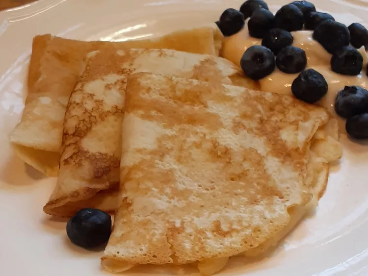

Pancakes Recipe

Description
Palacinke are thin, crêpe-like pancakes originating from Central and
Eastern Europe, particularly popular in countries like Serbia, Croatia,
and Hungary. They are made from a batter of eggs, milk, flour, and sugar,
resulting in a delicate, flexible texture that can be rolled, folded, or
filled with various sweet or savory ingredients such as jam, fruits,
cheese, or ham. Palacinke are versatile and can be enjoyed as a breakfast,
dessert, or light meal, making them a beloved treat in Balkan cuisine.
Ingredients
- 1 ½ cups all-purpose flour
- 2 tablespoons white sugar
- ½ teaspoon salt
- 4 large egg whites
- 3 cups milk
- 4 large egg yolks
- 3 tablespoons vegetable oil
- 2 teaspoons vanilla extract
- 1 tablespoon butter for the pan, or more as needed
Steps
- Sift together flour, sugar, and salt in a bowl.
-
Beat egg whites in a glass, metal, or ceramic bowl until stiff peaks
form. Set aside.
-
Mix milk, egg yolks, oil, and vanilla extract in a large bowl. Whisk in
flour mixture until well combined. Fold in egg whites with a spatula.
-
Heat a small piece of butter in a skillet and pour a small amount of
batter into the skillet. Turn skillet so batter covers the bottom of the
skillet. Cook until lightly browned on one side, 2 to 3 minutes. Flip
pancake over and cook on the other side for 1 to 2 minutes more. Repeat
with remaining batter, always melting a new small piece of butter in the
skillet first.
Home